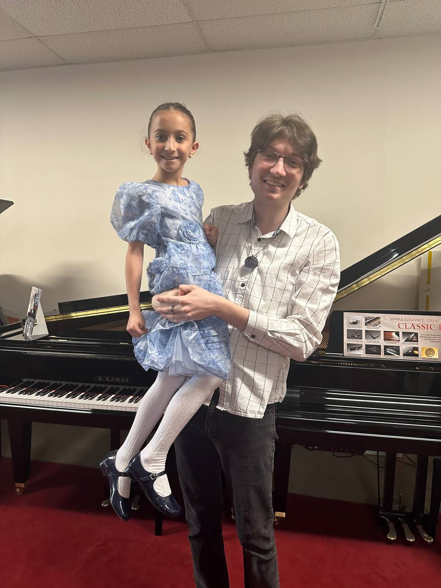

Spring Concert 2024 videos are here!


Ilya
Hello everyone! My name is Ilya. I have been teaching for more than 10 years, and I am proud to represent the piano teaching faculty of Teremok Studio.
I was Born in 1995 in Belarus and started leaning piano from 3 years old. Since my childhood I have participated in numerous competitions and have been awarded with I and II-degree laureate. When I was 10 years old, I discovered an amazing world of music which has multiple voices and drowned in it. That was the moment I encountered with Bach’s music and since then he has been my favorite composer.
I got a secondary special degree in Republican college of music in Minsk, Belarus. That was a place where I was mastering my performance, theory and communication skills. Having an opportunity not only playing solo, but also in a group, I enjoyed the teamwork and performing together. Being a teacher now I actively incorporate ensemble performing into my lessons.
I have been teaching since 2014, and I started my teaching experience with kids. My students’ ages ranged from 4 to 14 years old. I have been in the United States since 2022 and gained much experience from piano teachers here as well. Combining both Belarusian and American experiences, I have created a set of programs for all ages with an individual approach to each student. I build my immersive music program on three principles:
- I never force my students to play pieces they don’t enjoy - we always pick the music together, but at the same time I always make sure that the piece is challenging enough for them to keep developing
- My music program is based on the classical repertoire with the addition of non-classical songs/tunes my students want to learn.
- Music theory also plays an important role in my music program. I introduce at least the basic level of music theory/history and always let my students compose their own pieces with the further opportunity of performing them.
Tirelessly I improve my performing and teaching skills every day by looking at new methods, exploring new music strategies of well-known teachers and performers, plunging into music therapy field. I invite you to become my student – you will open a world full of miracles and you will never want to part with music again! Our process will be a mutual learning and as a result will benefit both of us!
Larisa (Лариса)
Приветствую каждого, кто готов впустить музыку во всех ее проявлениях в свой мир! Я Лариса – пианистка с колоссальным педагогическим стажем и родоначальник студии «Теремок». Всю свою жизнь я посвятила развитию представителей нового поколения, прививая им чувство прекрасного. Развивая тонкую грань души детишек, я даю им возможность не только наслаждаться музыкой изо дня в день, но и расширять кругозор и находить прекрасное в, казалось бы, рутинных ежедневных делах.
Я родилась и выросла в Беларуси. Получила высшее образование в Белорусской Государственной Академии Музыки им. Луначарского. После окончания ВУЗа сразу начала принимать активное участие в конкурсах республиканского и международного уровней как концертмейстер, так и как педагог. Почти все мои ученики становились победителями конкурсов, лауреатами и дипломантами. Я годами оттачивала свою музыкальную программу развития малышей, и сейчас я могу заинтересовать музыкой даже трехлетних детишек.
Моя музыкальная программа очень универсальна – подходит детям разного возраста. Также имеется отдельная программа обучения для взрослых. Я всегда чутко реагирую на пожелания учеников, и в то же время мягко направляю их внимание на классический репертуар, который дает незаменимую базу для всех пианистов – как любителей, так и профессионалов. Имея за спиной огромный багаж концертмейстерской деятельности я привнесла обучение концертмейстерскому мастерству в программу обучения и часто объединяю детей в пару солист + концертмейстер для выработки качеств командной работы. Уделяю должное внимание развитию слуховых навыков, теории музыки и чтению с листа. Это «три кита» на которых основывается дальнейшее изучение музыки студентами самостоятельно.
Порой мы и не задумываемся насколько сложно представить без музыки современный мир – игры, фильмы и даже медитации –везде вплетена музыка, которая создает колорит и неповторимый эмоциональный фон. Так позвольте же мне приоткрыть вам и вашему ребенку эту таинственную завесу и начать познавать прекрасную вселенную под названием музыка.
Videos
See more videos on our youtube channel
Contacts
Ilya (English): (201) 815-3906
Larysa (Russian): (551) 286-0834
e-mail: ilia.piano891@gmail.com